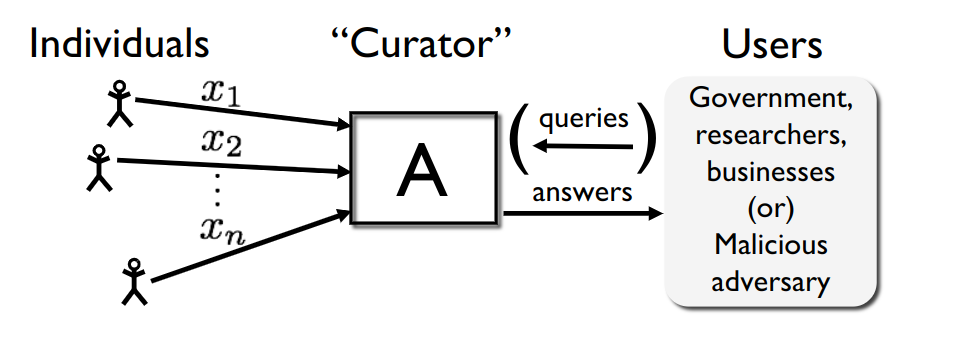

Optimal Regret of Bandits under
Differential Privacy
Context & Motivation
Privacy in Bandits
Sequential Decision-Making
- Make decisions based on data interactively
- Data is sensitive and detailed
- Multi-armed Bandits under Differential Privacy
Multi-armed Bandits

- Learner interacts with an unknown environment
- Goal: maximize rewards
Example: Clinical trials [1]

For the $t$-th patient
- Doctor chooses medicine $a_t \in \{1, \dots, K\}$
- If Patient $t$ is cured $r_t = 1$, otherwise $r_t = 0$
-
[1] W. R. Thompson.
On the likelihood that one unknown probability exceeds another in view of the evidence of two samples
(Biometrika 1933).
Challenge
- Protect the privacy of the patients' data
- Other sensitive applications: recommender systems, online advertisement, hyper-parameter optimisation, etc.
Main Question: What is the cost of achieving "privacy" in bandits?
Differential Privacy (DP) [1]
A promise from a data analyst to data subjects that:
"Same conclusions will essentially be reached, independent of whether any data subject opts into or out of the data set."
-
[1] C.Dwork, F.McSherry, K.Nissim, A.Smith.
Calibrating noise to sensitivity in private data analysis
(TCC 2006).
Differential Privacy (DP)
 Active Research Field
Active Research Field
.png)
Outline
- Bandits overview
- Defining DP in bandits
- Lower bounds: What is the best utility achievable under DP?
- Algorithm design: How to achieve the best utility with DP?
- Conclusion and open Problems
Bandits
Overview
Stochastic Bandit Interaction
Sequential interaction between:
- a policy $\pi = (\pi_t)_t$, where $$\pi_t: (a_1, r_1, \dots, a_{t- 1}, r_{t - 1}) \rightarrow a_t \in [K] $$
- an environment $\nu = (P_a)_{a \in [K]}$, with means $\mu = (\mu_a)_{a \in [K]}$
At step $t$
- $a_t \sim \pi_t(. \mid a_1, r_1, \dots, a_{t-1}, r_{t-1})$
- $r_t \sim P_{a_t}$
Main Utility Objective
Regret minimisation: Given a horizon $T$, minimise $$\mathrm{Reg}_{T}(\pi, \nu) \triangleq T \mu^\star-\mathbb{E}_{\nu \pi}\left[\sum_{t=1}^{T} r_{t}\right]$$ where $\mu^\star \triangleq \max\limits_{a \in [K]} \mu_a$
Minimal Requirement: We want algorithms s.t. $\mathrm{Reg}_{T}/T \rightarrow 0$ as $T \rightarrow \infty$
Another Utility Objective
Best-arm Identification: Find the optimal arm $$a^\star \triangleq \arg\max\limits_{a \in [K]} \mu_a$$ Fixed Confidence: Minimise the number of samples used to identify $a^\star$ with confidence $1 - \delta \in (0,1)$
Naive Algorithms
- $a_t = $ random action $$ \mathrm{Reg}_{T} = \Omega(T) $$
- Follow The Leader (FTL) $$ \mathrm{Reg}_{T} = \Omega(T) $$
- $a_t = $ FTL w.prob $1 - \epsilon$, random action w.prob $\epsilon$ $$ \mathrm{Reg}_{T} = \Omega(\epsilon T) $$
Upper Confidence Bound (UCB) Algorithm [1]
- Build confidence intervals for the mean of each arm
- Act optimistically to balance exploration and exploitation

[1] P. Auer, N. Cesa-Bianchi, and P. Fischer. Finite-time analysis of the multiarmed bandit problem. (Machine Learning, 2002).
UCB Algorithm
Building confidence intervals
Let $\hat \mu_a(t)$ be the empirical mean of the arm $a$ at round $t$: $$ \hat \mu_a(t) = \frac{1}{N_a(t)} \sum_{s = 1}^{t - 1} \mathbb{1}\{a_s = a\} r_s \text{ where } N_a(t) = \sum_{s = 1}^{t - 1} \mathbb{1}\{a_s = a\} $$ Theorem. For rewards in $[0,1]$, with proba at least $1 - \delta$, $$ | \hat \mu_a(t) - \mu_a | \leq \sqrt{\frac{\log(1/\delta)}{2 N_a(t)}} $$
Proof: Use Hoeffding Inequality
UCB Algorithm
Act optimistically
At each step $t$, choose the action with highest upper confidence bound: $$ a_t \in \mathrm{argmax}_{a \in [K]} \mathrm{UCB}_a(t, \delta) $$
where $$ \mathrm{UCB}_a(t, \delta) \triangleq \hat \mu_a(t) + \sqrt{\frac{\log(1/\delta)}{2 N_a(t)}} $$
UCB Algorithm
Regret Analysis
Theorem. For rewards in $[0,1]$, for a horizon $T$ and $\delta = 1/T^2$, $$ \mathrm{Reg}_T(\mathrm{UCB}, \nu) \leq 3 \sum_{a = 1}^K \Delta_a + \sum_{a: \Delta_a > 0} 16 \frac{\log(T)}{\Delta_a} $$ where $\Delta_a = \mu^\star - \mu_a$
UCB Algorithm
Regret proof
Under the good event, a suboptimal arm $a$ is not sampled anymore as soon as $$ \sqrt{\frac{\log(1/\delta)}{2 N_a(t)}} \leq \Delta_a $$
 which gives that $N_a(T) \approx \frac{\log(1/\delta)}{\Delta_a^2}$
which gives that $N_a(T) \approx \frac{\log(1/\delta)}{\Delta_a^2}$
Using that $ \mathrm{Reg}_T(\mathrm{UCB}, \nu) = \sum_{a} \mathbb{E}[N_a(T)] \Delta_a $ and $\delta = 1/T^2$ concludes the proof
KL-UCB [1] is optimal
At each step $t$, chose the action with highest upper confidence bound:
$$ a_t \in \mathrm{argmax}_{a \in [K]} \mathrm{KL}\text{-}\mathrm{UCB}_a(t) $$
where $$\mathrm{KL}\text{-}\mathrm{UCB}_a(t) \triangleq \max \left\{ \tilde{\mu} \in [0,1]: \mathrm{kl}(\hat{\mu}_a(t), \tilde{\mu} ) \leq \frac{\log f(t)}{N_a(t)} \right\} $$ and $\mathrm{kl}(x, y) \triangleq x \log(x/y) + (1 - x) \log((1 - x)/(1 - y))$

[1] A. Garivier and O. Cappé. The KL-UCB algorithm for bounded stochastic bandits and beyond. (COLT, 2011).
KL-UCB [1] is optimal
Theorem. For Bernoulli rewards, for a horizon $T$, $$ \lim_{T \rightarrow \infty} \frac{\mathrm{Reg}_{T}(\mathrm{KL}\text{-}\mathrm{UCB}, \nu)}{\log(T)} \leq \sum_{a: \Delta_a > 0} \frac{\Delta_a}{\mathrm{kl}(\mu_a, \mu^\star)}$$ where $$ \begin{align*} \mathrm{kl}(\mu_a, \mu^\star) &\triangleq \mu_a \log(\mu_a/\mu^\star) + (1 - \mu_a) \log((1 - \mu_a)/(1 - \mu^\star))\\ & \geq 2 (\mu^\star - \mu_a)^2 = 2 \Delta_a^2 \end{align*} $$
Theorem 2. For Bernoulli rewards, and any consistent policy $\pi$, $$ \lim\inf_{T \rightarrow \infty} \frac{\mathrm{Reg}_T(\pi, \nu)}{\log(T)} \geq \sum_{a: \Delta_a > 0} \frac{\Delta_a}{ \mathrm{kl}(\mu_a, \mu^\star)}$$
Regret Lower Bounds
Proof Technique
- Reduction to hypothesis testing
- Construct two bandit environments that are conflicting:
- Actions that are good for one environment are bad for the other
- The two environments are hard to distinguish
 $$
\mathrm{KL}\left(M^\mathbb{P}, M^\mathbb{Q} \right) \leq \mathrm{KL}\left(\mathbb{P}, \mathbb{Q} \right)
$$
$$
\mathrm{KL}\left(M^\mathbb{P}, M^\mathbb{Q} \right) \leq \mathrm{KL}\left(\mathbb{P}, \mathbb{Q} \right)
$$
Bandits
Recap
- KL-UCB solves bandits optimally with regret $\sum_{a: \Delta_a > 0} \frac{\Delta_a \log(T)}{ \mathrm{kl}(\mu_a, \mu^\star)}$
Differential Privacy
Extending DP to Bandits
Privacy-Preserving Data Analysis

Large collection of personal data:
- Census
- Public Health
- Social Networks
- Summary statistics
- Training machine learning models
- Synthetic data
- Answering queries accurately about the population
- Individual information stays hidden
"Same conclusions will essentially be reached, independent of whether any individual opts into or out of the data set."
Differential Privacy (DP) [1]
Intuition: Indistinguishability from the mass

$\mathcal{M}$ is $\color{blue}{\epsilon}$-DP if $$ \forall d\sim d', \, \forall E\in \mathcal{O}, \, \mathcal{M}_{d}(E) \leq e^{\color{blue}{\epsilon}} \mathcal{M}_{d'}(E) $$
$\color{blue}{\epsilon}$: Privacy budget
-
[1] C.Dwork, F.McSherry, K.Nissim, A.Smith.
Calibrating noise to sensitivity in private data analysis
(TCC 2006).
Comments on the DP definition
$$ \forall d\sim d', \, \forall E\in \mathcal{O}, \, e^{\color{blue}{-\epsilon}} \mathcal{M}_{d'}(E) \leq \mathcal{M}_{d}(E) \leq e^{\color{blue}{\epsilon}} \mathcal{M}_{d'}(E) $$
- Smaller the privacy budget $\color{blue}{\epsilon}$, higher the privacy
-
A worst-case guarantee:
- Every possible neighbours (even very unlikely ones)
- All possible outputs (even very unlikely ones)
-
Protects against an adversary, with unlimited compute power and auxiliary information:
$H_0$: The output was generated from $d$
vs
$H_1$: The output was generated from $d'$
$\alpha + e^\color{blue}{\epsilon} \beta \geq 1$ and $\beta + e^\color{blue}{\epsilon} \alpha \geq 1$
Properties of DP
Post-Processing. If $\mathcal{M}$ is $\color{blue}{\epsilon}$-DP, and $\mathcal{F}$ is an arbitrary randomised mapping, then
$\mathcal{F}o\mathcal{M}$ is $\color{blue}{\epsilon}$-DP
Group privacy. If $\mathcal{M}$ is $\color{blue}{\epsilon}$-DP, $d$ and $d'$ differ in $\color{red}{k}$ elements, then $$ \forall E \in \mathcal{O}, \, \mathcal{M}_d(E) \leq e^{\color{red}{k} \color{blue}{\epsilon}} \mathcal{M}_{d'}(E) $$
Basic composition. If $\mathcal{M} = (\mathcal{M}_1, \dots, \mathcal{M}_T)$ is a mechanism where each $\mathcal{M}_t$ is $\color{blue}{\epsilon}_t$-DP then
$\mathcal{M}$ is $\left(\sum_{t= 1}^T \color{blue}{\epsilon}_t \right)$-DP
Achieving DP
The Laplace Mechanism
Let $f: \mathcal{X}^n \rightarrow \mathbb{R}^d$ be a deterministic function.
Definition. The L1 sensitivity of $f$ is $$s_1(f) = \max\limits_{d \sim d'} \left \| f(d) - f(d') \right \|_1 $$
Theorem. Let $Y_i \sim^{\text{iid}} \mathrm{Lap}\left(\frac{s_1(f)}{\color{blue}{\epsilon}}\right)$. Then $$\mathcal{M}: x \rightarrow f(x) + (Y_1, \dots, Y_d)$$ is $\color{blue}{\epsilon}$-DP
Example. $\tilde{\mu}_n \triangleq \frac{1}{n} \sum_{i=1}^{n}x_i + \mathrm{Lap}\left ( \frac{1}{\epsilon n} \right)$ is $\epsilon$-DP, for $x_i \in [0,1]$
Bandits with DP
Privacy Constraint: Rewards leak sensitive information about individuals

Ingredients to specify:
- The randomized mechanism: induced by the policy $\pi$
- The output: sequence of actions
- The private input dataset: reward dataset
Table DP
Definition: $\pi$ satisfies $\epsilon$-DP if $\mathcal{M}^\pi$ is $\epsilon$-DP

Objectives
Recap
- Design an $\epsilon$-DP policy $\pi$ that minimises $\mathrm{Reg}_{T}(\pi, \nu)$
Lower Bounds
Regret Lower Bound
Theorem. [$\ast$] For any $\color{blue}{\epsilon}$-global DP policy $\pi$ consistent over Bernoulli environments, then $$ \liminf _{T \rightarrow \infty} \frac{\mathrm{Reg}_{T}(\pi, \nu)}{\log (T)} \geq \sum_{a: \Delta_{a}>0} \frac{\Delta_a}{\mathrm{d}_{\color{blue}{\epsilon}}(\mu_a, \mu^\star)} $$ where $$\textrm{d}_{\color{blue}{\epsilon}}(x, y) \triangleq \inf_{z \in [x \wedge y , x \vee y]}\left \{\color{blue}{\epsilon} |z - x| + \mathrm{kl}(z, y)\right\}$$
[$\ast$] A. Azize, Y. Wu, J. Honda, F. Orabona, S. Ito and D. Basu. Optimal Regret of Bandits under Differential Privacy (NeurIPS 2025)
Regret Lower Bound
Simplification and Comments
$$ \liminf _{T \rightarrow \infty} \frac{\mathrm{Reg}_{T}(\pi, \nu)}{\log (T)} \geq \sum_{a: \Delta_{a}>0} \frac{\Delta_a}{\mathrm{d}_{\color{blue}{\epsilon}}(\mu_a, \mu^\star)} $$
- Two hardness regimes:
- A low privacy regime when $\epsilon > \log\frac{\mu^\star}{\mu_a} + \log \frac{1 - \mu_a}{1 - \mu^\star}$: privacy is for "free" i.e. $\mathrm{d}_\epsilon = \mathrm{KL} $
- A high privacy regime when $\epsilon \leq \log\frac{\mu^\star}{\mu_a} + \log \frac{1 - \mu_a}{1 - \mu^\star}$: privacy has a cost $\mathrm{d}_\epsilon \sim^{\epsilon \rightarrow 0} \epsilon \mathrm{TV}$
Lower Bound Proof
Fixed Couplings

$$ \mathrm{KL}\left(M^\mathbb{P}, M^\mathbb{Q} \right) \leq \inf_{\mathcal{C} \in \Pi\left( \mathbb{P}, \mathbb{Q} \right)} \mathbb{E}_{(d, d') \sim \mathcal{C}} \left[ \mathrm{KL}\left(\mathcal{M}_d, \mathcal{M}_{d'} \right) \right] $$ $$ \mathrm{KL}\left(M^\mathbb{P}, M^\mathbb{Q} \right) \leq \epsilon \inf_{\mathcal{C} \in \Pi\left( \mathbb{P}, \mathbb{Q} \right)} \mathbb{E}_{(d, d') \sim \mathcal{C}} \left[ \mathrm{d}_\mathrm{Ham}(d, d') \right] $$
Lower Bound Proof
Optimising over Couplings

$$ \mathrm{KL}\left(M^\mathbb{P}, M^\mathbb{Q} \right) \leq \inf_{\mathbb{L}} \left \{ \inf_{\mathcal{C} \in \Pi\left( \mathbb{P}, \mathbb{L} \right)} \mathbb{E}_{(d, d') \sim \mathcal{C}} \left[ \mathrm{KL}\left(\mathcal{M}_d, \mathcal{M}_{d'} \right) \right] + \mathrm{KL}\left(\mathbb{L}, \mathbb{Q} \right) \right\} $$ $$ \mathrm{KL}\left(M^\mathbb{P}, M^\mathbb{Q} \right) \leq \inf_{\mathbb{L}} \left \{ \epsilon \inf_{\mathcal{C} \in \Pi\left( \mathbb{P}, \mathbb{L} \right)} \mathbb{E}_{(d, d') \sim \mathcal{C}} \left[\mathrm{d}_\mathrm{Ham}(d, d')\right] + \mathrm{KL}\left(\mathbb{L}, \mathbb{Q} \right) \right\} $$
Retrieving the Lower bounds
- Minimax regret lower bounds [1]
- Sample complexity lower bounds [2,3]
- Regret lower bounds under a linear structure [1,4]
- Generalisation to other DP notions: zero Concentrated DP [4]
[1] A. Azize, D. Basu. When Privacy Meets Partial Information: A Refined Analysis of Differentially Private Bandits (NeurIPS 2022)
[2] A. Azize, M. Jourdan, A. Marjani, D. Basu. Differentially Private Best-Arm Identification (To appear in JMLR)
[3] A. Azize*, M. Jourdan*. Optimal Best Arm Identification under Differential Privacy (NeurIPS 2025)
[4] A. Azize, D. Basu. Concentrated Differential Privacy for Bandits (IEEE SaTML 2024)
Lower Bounds
Recap
- Regret lower bounds for $\epsilon$-DP consistent policies is $$\Omega\left(\sum_a \frac{\log(T) \Delta_a}{\mathrm{d}_{\epsilon}(\mu_a, \mu^\star)}\right)$$
Algorithm Design
Generic Recipe
 1. Characterise a sequence of "sufficient" statistics:
1. Characterise a sequence of "sufficient" statistics:
i.e. the sequence of actions only depend on these statistics
2. Estimate the sequence of "sufficient" statistics privately- Adding calibrated noise
- Run the algorithm in phases, with forgetting
Finite-armed Stochastic Bandits
The UCB Algorithm [1]
At step $t$, UCB chooses the arm $A_{t} \in \operatorname{argmax}\limits_{a \in [K]} \mathrm{UCB}_a(t)$
where $ \mathrm{UCB}_a(t) = \hat{\mu}_a(t) + \sqrt{\frac{\alpha \log(t)}{2 N_a(t)}} $
Question: How to design a near-optimal $\epsilon$-DP version of UCB?
[1] P. Auer, N. Cesa-Bianchi, and P. Fischer. Finite-time analysis of the multiarmed bandit problem. (Machine Learning, 2002).
First Attempt
Compute the sequence of indexes $\{\mathrm{UCB}_a(t)\}_{a, t}$ privately using basic composition and the Laplace mechanism $$ \mathrm{DP}\text{-}\mathrm{UCB}^\epsilon_a(t) = \hat\mu_a(t) + \sqrt{\frac{ \log(t)}{2 N_a(t)}} + \color{blue}{\mathrm{Lap}\left(\frac{K T}{\epsilon N_a(t)} \right) + \frac{ K T \log(t)}{\epsilon N_a(t)}}, $$ which gives linear regret
AdaP-UCB[$\ast$]

- Compute $A_{\ell} = \operatorname{argmax}_{a} \color{blue}{\operatorname{AdaP-UCB}_{a}^{\epsilon}}(t_{\ell} )$
- Choose arm $A_{\ell}$ until round t such that $N_{A_\ell}(t) = 2N_{A_\ell}(t_{\ell} - 1)$
- Update $\color{blue}{\operatorname{AdaP-UCB}_{a}^{\epsilon}}(t_{\ell} )$ using only reward samples from the last episode
$$\color{blue}{\operatorname{AdaP-UCB}_{a}^{\epsilon}}(t_{\ell} ) \triangleq \underset{\text{Non-private index}}{\underbrace{\hat{\mu}_{a}^{\ell} + \sqrt{ \frac{ \log(t_{\ell})}{ 2\times \frac{1}{2} N_a(t_\ell) } }}} + \underset{\text{Laplace noise}}{\underbrace{\mathrm{Lap} \left( \frac{1}{\epsilon \times \frac{1}{2} N_a(t_\ell)} \right)}} + \underset{\text{Privacy bonus}}{\underbrace{\frac{ \log( t_{\ell})}{ \epsilon \times \frac{1}{2} N_a(t_\ell )} }}$$ Theorem. AdaP-UCB is $\epsilon$-DP for rewards in $[0,1]$ and achieves $$ \mathrm{Reg}_{T}(\mathsf{AdaP\text{-}UCB}, \nu) \leq \sum\limits_{a \colon \Delta_a > 0} \left ( \frac{16 }{\min\{\Delta_a, \epsilon\}} \log(T) + \frac{3 \alpha}{\alpha - 3} \right ) $$ [$\ast$] A. Azize, D. Basu. When Privacy Meets Partial Information: A Refined Analysis of Differentially Private Bandits (NeurIPS 2022).
DP-KLUCB[$\ast$]
- Compute $A_{\ell} = \operatorname{argmax}_{a} \color{blue}{\operatorname{DP-KLUCB}_{a}^{\epsilon}}(t_{\ell})$
- Choose arm $A_{\ell}$ until round t such that $N_{A_\ell}(t) = \alpha N_{A_\ell}(t_{\ell} - 1)$
- Update $\color{blue}{\operatorname{DP-KLUCB}_{a}^{\epsilon}}(t_{\ell})$ using all samples
$$\color{blue}{\operatorname{DP-KLUCB}_{a}^{\epsilon}}(t_{\ell}) \triangleq \max\left\{\tilde \mu \in [0,1] \colon \mathrm{d}_\epsilon\left([\tilde{\mu}_{a}(t_\ell)]_{0}^1, \tilde \mu\right)\le \frac{\log t_\ell}{N_a(t_\ell)}\right\}$$ Theorem. DP-KLUCB is $\epsilon$-global DP for rewards in $[0,1]$ and for $\alpha>1$, and Bernoulli bandits $\nu$ $$ \mathrm{Reg}_{T}(\mathsf{DP\text{-}KLUCB}, \nu) \leq \alpha \sum_{a \neq a^*} \frac{\Delta_a\log T}{\mathrm{d}_\epsilon(\mu_a, \mu^\star)} +o(\log T). $$ [$\ast$] A. Azize, Y. Wu, J. Honda, F. Orabona, S. Ito and D. Basu. Optimal Regret of Bandits under Differential Privacy (NeurIPS 2025)
Extension to Other Settings
FC-BAI [1,2]: Top Two algorithms
- Sequence of "sufficient" statistics $(\hat \mu_{a}(t))_{t,a}$
- Arm-dependent doubling, with forgetting
- Re-calibrating the stopping time thresholds for noise addition
[1] A. Azize, M. Jourdan, A. Marjani, D. Basu. Differentially Private Best-Arm Identification (To appear in JMLR)
[2] A. Azize*, M. Jourdan*. Optimal Best Arm Identification under Differential Privacy (NeurIPS 2025) Linear Bandits [$\ast$]: similar arms have similar rewards
- $a \in \mathbb{R}^d$ and $r_t \triangleq \left\langle\theta^\star, a_{t}\right\rangle+\eta_{t}$
- Sequence of "sufficient" statistics: estimated $(\hat \theta(t))_{t}$
- Elimination-based algorithms: already runs in independent phases
- Explore each arm longer due to noise addition
[$\ast$] A. Azize, D. Basu. Concentrated Differential Privacy for Bandits (SaTML 2024) Contextual Linear Bandits [$\ast$]: the best medicine depends on the patient
- $c_t \in \mathbb{R}^d$ is the context and $r_t = \left \langle \theta^\star, \psi(a_t, c_t) \right \rangle + \eta_{t}$
- Sequence of "sufficient" statistics $(\hat \theta(t))_{t}$
- Phase change in LinUCB: doubling of determinant of the design matrix
- Calibrating the ellipsoid confidence intervals for noise addition
- The contexts are supposed to be public!
[$\ast$] A. Azize, D. Basu. Concentrated Differential Privacy for Bandits (SaTML 2024)
Experiments

Algorithm Design
Recap
Using the same algorithmic blueprint, we design optimal private bandit algorithms in different settings
Conclusion & Open Problems
Privacy in Bandits
- Definitions: Utility (Regret/BAI), Privacy (pure DP)
- Lower bounds: couplings and optimal transport
- Generic recipe for algorithm design
Two regimes of hardness depending on $\epsilon$ and the gaps $(\Delta_a)$
Open Problems
- Analysis beyond pure DP: $(\epsilon, \delta)$-DP, $\rho$-zCDP
- Adversarial bandits under DP
- Contextual linear bandits when contexts are private[$\ast$]
[$\ast$] A. Azize, D. Basu. Open Problem: What is the Complexity of Joint Differential Privacy in Linear Contextual Bandits? (COLT 2024).
Privacy Beyond Bandits
- Characterising optimal Membership Inference attacks, yielding new Privacy auditing tools [1]
- Leveraging Public data in Private ERM Learning [2]
- Optimal stopping and Prophet inequalities under Differential Privacy [3]
[1] A. Azize, D. Basu. Some Targets Are Harder to Identify than Others: Quantifying the Target-dependent Membership Leakage (AISTATS 2025, Oral)
[2] A. Azize, M. Tamine, B. Heymann, M. Vono, P. Loiseau, V. Perchet. Mirror Descent for Private Learning with Out-of-distribution Public Data (Under review)
[3] A. Azize, M. Molina, H. Richard, V. Perchet. Prophet Inequalities under Local Differential Privacy (Under review)
Privacy and Incentives
Some Problems with Differential Privacy (DP):
- DP = defence against all MI attacks
- How to interpret $\epsilon$? How to set $\epsilon$ practically?
- DP = Privacy-utility trade-offs
Game Theory to the rescue:
- Incentive Theory
- Privacy at equilibrium
- Price Discrimination and Data markets [*]
[*] A. Azize, T. Gaboriaud, V. Perchet. Privacy in Price Discrimination Games (Work in Progress)
Thank you!
Appendix
View DP
Definition: $\pi$ satisfies $\epsilon$-View DP if $\mathcal{V}^\pi$ is $\epsilon$-DP

Interactive DP
 Let $b \in \{L, R\}$ and $t^\star \in \{1, \dots, T\}$.
Let $b \in \{L, R\}$ and $t^\star \in \{1, \dots, T\}$.
For $t=1,\dots, T$:
- The policy $\pi$ selects an action $$a_t \sim \pi_t(\cdot \mid a_1, r_{1}, \dots, a_{t - 1}, r_{t-1}), \, a_t \in [K]$$
- The adversary $\mathcal{A}$ selects an adaptively chosen pair of rewards:
$$ (r_t^L, r_t^R) = \mathcal{A}_t(a_1, \dots, a_t)$$
- If $t \neq t^\star$: $$ r_t = r_t^L $$
- If $t = t^\star$: $$ r_{t^\star} = r_{t^\star}^b$$
- The policy $\pi$ observes the reward $r_t$
A policy is Interactive DP if the View of $\mathcal{A}$ is $\approx_{\epsilon}$ for $b= L$ and $b = R$
Interactive DP
Definition: $\pi$ satisfies $\epsilon$-Interactive DP $\Leftrightarrow$ $\mathcal{T}^\pi$ is $\epsilon$-DP

Comments on the Definitions [$\ast$]
- $\pi$ is $\epsilon$-Table DP $ \Leftrightarrow $ $\pi$ is $\epsilon$-View DP $ \Leftrightarrow $ $\pi$ is $\epsilon$-Interactive DP
- For approx DP: Interactive DP $\subset$ Table DP $\subset$ View DP
[$\ast$] A. Azize, D. Basu. Concentrated Differential Privacy for Bandits (SaTML 2024)
Interactive DP

Regret lower bounds under $\epsilon$-DP
| Setting | Minimax | Problem Dependent |
|---|---|---|
| Finite-armed bandits | $\max \biggl(\frac{1}{27} \sqrt{T(K-1)}, \frac{1}{22} \frac{K-1}{\epsilon} \biggr)$ | $\sum_{a: \Delta_{a}>0} \frac{\Delta_{a}\log(T)}{ \min (d_a, \epsilon t_a) } $ |
| Linear bandits | $\max \biggl (\frac{\exp (-2)}{8} d\sqrt{T}, \frac{\exp (-1)}{4} \frac{d}{\epsilon} \biggr )$ |
$ \inf _{\alpha \in[0, \infty)^{\mathcal{A}}} \sum_{a \in \mathcal{A}} \alpha(a) \Delta_{a}\log(T) $ $\text { s.t. }\|a\|_{H_{\alpha}^{-1}}^{2} \leq 0.5 \Delta_a \min \left (\Delta_{a}, \epsilon \rho(\mathcal{A}) \right )$ |
Couplings and Group Privacy
$\rho$-zCDP
$$ \mathrm{KL}\left(M^\mathbb{P}, M^\mathbb{Q} \right) \leq \inf_{\mathcal{C} \in \Pi\left( \mathbb{P}, \mathbb{Q} \right)} \mathbb{E}_{(d, d') \sim \mathcal{C}} \left[ \mathrm{KL}\left(\mathcal{M}_d, \mathcal{M}_{d'} \right) \right] $$
If $\mathcal{M}$ is $\rho$-zCDP, then $$\mathrm{KL}(\mathcal{M}_d, \mathcal{M}_{d'}) \leq \rho d_{\mathrm{Ham}}(d, d')^2$$
Solve the transport problem
$$ \inf_{\mathcal{C} \in \Pi\left( \mathbb{P}, \mathbb{Q} \right)} \mathbb{E}_{(d, d') \sim \mathcal{C}} \left[ d^2_{\mathrm{Ham}}(d, d') \right] $$
Couplings and Total Variation
$\rho$-zCDP
For $\mathbb{P} =\bigotimes_{t = 1}^T \mathbb{P}_{t} $ and $\mathbb{Q} =\bigotimes_{t = 1}^T \mathbb{Q}_{t}$, using $\mathcal{C}_\infty(\mathbb{P}, \mathbb{Q}) \triangleq \bigotimes_{t = 1}^T c_\infty\left(\mathbb{P}_t, \mathbb{Q}_t\right)$: $$ \mathrm{KL}\left(M^\mathbb{P}, M^\mathbb{Q} \right) \leq \rho \left( \sum_{t = 1}^T \mathrm{TV}\left(\mathbb{P}_t, \mathbb{Q}_t\right) \right)^2 + \rho \sum_{t = 1}^T \mathrm{TV}\left(\mathbb{P}_t, \mathbb{Q}_t\right) \left( 1 - \mathrm{TV}\left(\mathbb{P}_t, \mathbb{Q}_t\right) \right) $$
Regret lower bounds under $\rho$-Interactive zCDP
| Minimax | |
|---|---|
| Stochastic Multi-armed bandit | $\max \biggl(\frac{1}{27} \sqrt{T(K-1)}, \frac{1}{124} \sqrt{\frac{K-1}{\rho}} \biggr)$ |
| Stochastic Linear bandit | $\max \biggl (\frac{\exp (-2)}{8} d\sqrt{T}, \frac{\exp (-2.25)}{4} \frac{d}{\sqrt{\rho}} \biggr )$ |
AdaP-KLUCB
Regret Analysis: $$ \mathrm{Reg}_{T}(\text{AdaP-KLUCB}, \nu) \leq \sum\limits_{a \colon \Delta_a > 0}\left ( \frac{C_1(\alpha) \Delta_a }{\min\{ \mathrm{kl}(\mu_a, \mu^*) , C_2 \epsilon \Delta_a\}} \log(T) + \frac{3 \alpha}{\alpha - 3} \right ) $$
Joint-DP [1]

[1] R. Shariff, O. Sheffet. Differentially Private Contextual Linear Bandits (NeurIPS 2018).
Simulations
Other setting